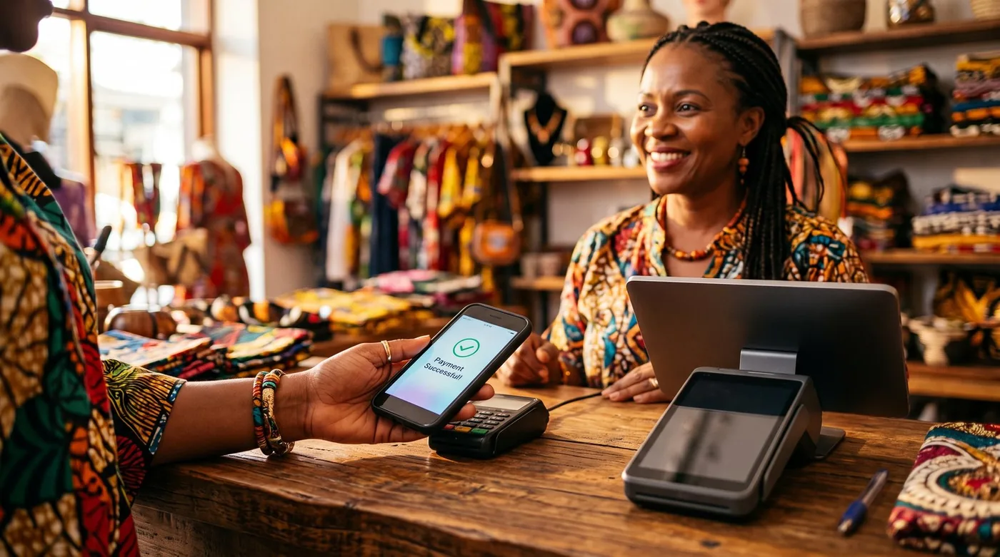

Logiciel de caisse pour boutique en Côte d'Ivoire en 2026 : Loyverse, solutions locales ou digabloPos ?
Vous tenez une boutique à Abidjan, une quincaillerie à Bouaké ou un point de vente à Yamoussoukro, et le soir venu vous ne savez jamais vraiment combien vous avez encaissé ? Un client a payé en Wave, un autre en Orange Money, un troisième en espèces, et un quatrième vous doit encore pour la semaine passée. Ajoutez à ça la FNE dont tout le monde parle depuis 2025, et le cahier de vente ne suffit plus. Ce guide vous dit ce qu'un logiciel de caisse doit vraiment savoir faire pour tenir ce rythme, et lequel choisir sans vous ruiner.

Pourquoi le cahier ne suffit plus
Un cahier de vente, ça marche jusqu'au jour où une page se perd, où l'écriture devient illisible, ou où vous voulez juste savoir combien vous avez vraiment vendu ce mois-ci. Le calcul à la main prend du temps, et au comptoir, le temps c'est un client qui attend ou qui repart voir la boutique d'à côté.
À lire dans la foulée : frais cachés d'un logiciel de caisse, logiciels de caisse gratuits, et gérer ses stocks en petit commerce. Si vous confiez la boutique à un gérant, voyez aussi les six signaux qui apparaissent avant l'inventaire. À lire aussi : facture normalisée et coupure de réseau.
Un logiciel de caisse ne remplace pas votre sens du commerce. Il vous évite de refaire les additions, de courir après un client sur ce qu'il doit, et de perdre de petites sommes chaque jour sans savoir pourquoi. Mais toutes les caisses ne se valent pas pour votre réalité : une application pensée pour un magasin européen, avec une seule monnaie et un paiement carte classique, ne coche pas forcément les bonnes cases ici, où le mobile money et la vente à crédit font partie du quotidien.
Wave, Orange Money, MTN MoMo : le casse-tête du soir
En Côte d'Ivoire, la majorité des paiements du quotidien passent aujourd'hui par Wave, Orange Money ou MTN MoMo en plus du cash, souvent plusieurs le même jour dans la même boutique. Le problème n'est presque jamais le paiement lui-même : ces services fonctionnent bien la plupart du temps. Le problème, c'est de faire correspondre en fin de journée ce qui est arrivé sur vos comptes mobile money avec ce qui a été vendu, en plus des espèces dans le tiroir. Beaucoup de commerçants gèrent encore ça de façon informelle, avec un carnet d'un côté et plusieurs applications de l'autre, ce qui donne des fins de journée chaotiques et des écarts qu'on n'arrive plus à expliquer.
Une question revient souvent : est-ce que le logiciel de caisse doit lui-même encaisser en Wave ou en Orange Money ? Non. Ce rôle appartient à l'opérateur, via votre compte marchand. Ce que votre caisse doit faire, c'est enregistrer proprement chaque mode de paiement à part, cash, Wave, Orange Money, MTN MoMo, à crédit, pour que vous ayez un rapport clair en fin de journée sans ressortir la calculatrice. Les frais de retrait et de transfert sont fixés par chaque opérateur, pas par votre logiciel de caisse, et ils évoluent : vérifiez toujours le taux à jour sur l'application ou le site officiel avant de vous engager, ou utilisez notre calculateur de frais d'encaissement pour comparer sur votre propre chiffre d'affaires.
La FNE : ce que votre caisse doit (et ne doit pas) faire
Depuis 2025, la facture normalisée électronique (FNE) de la DGI s'est imposée progressivement à toutes les entreprises formelles : grandes entreprises au régime réel normal dès le 1er juin 2025, régime réel simplifié au 1er juillet, micro-entreprises au 1er août, entreprenants et acteurs municipaux au 1er septembre 2025. Chaque facture certifiée reçoit un numéro, un visuel FNE et un QR code vérifiable, et les magasins à rayons multiples doivent coupler leur ticket de caisse à un reçu normalisé (article 145 du Livre de procédures fiscales). Quelques secteurs restent exemptés, dont les pharmacies, les banques et les assurances. En cas de manquement, les pénalités varient selon le régime : autour de 10 000 FCFA par facture pour une micro-entreprise (plafond 500 000 FCFA par contrôle), 30 000 FCFA au régime simplifié (plafond 3 000 000 FCFA), 50 000 FCFA au régime réel normal (plafond 10 000 000 FCFA). Ces chiffres évoluent, vérifiez toujours votre situation précise auprès de la DGI.
Là où beaucoup de commerçants se trompent : un logiciel de caisse gratuit, même excellent, ne vous met pas automatiquement en conformité FNE. La certification passe par la plateforme de la DGI, une intégration API, ou un terminal électronique de paiement. Un bon logiciel doit juste vous donner une base de ventes propre, prête à s'y raccorder, sans prétendre la remplacer. Si un éditeur affirme que son logiciel « gère la FNE » sans autre précision, demandez-lui comment concrètement, et faites confirmer votre conformité par la DGI elle-même.
Le réseau qui coupe : pourquoi le mode hors ligne n'est pas un bonus
Une coupure de connexion en pleine vente n'est pas un scénario rare à Abidjan comme dans les régions, c'est une question de quand, pas de si. Si votre caisse a besoin d'internet pour encaisser, vous êtes bloqué au pire moment : file d'attente, client pressé, vente qui part chez le voisin.
Le mode hors ligne n'est donc pas un gadget technique, c'est ce qui vous permet de continuer à vendre normalement, avec une synchronisation automatique des données dès que le réseau revient. Le conseil le plus utile qu'on puisse vous donner : ne vous fiez pas à la brochure. Avant d'adopter une caisse, coupez volontairement le Wi-Fi ou les données mobiles de votre téléphone et faites une vente test, un ajout au stock, une impression de ticket. Si ça marche sans accroc, y compris pour consulter vos niveaux de stock, vous avez votre réponse.
Gérer l'ardoise sans perdre le fil
La vente à crédit, l'ardoise pour un client fidèle qui paiera en fin de semaine ou en fin de mois, fait partie du quotidien de beaucoup de boutiques et d'échoppes de marché en Côte d'Ivoire. C'est un service qui fidélise, mais qui devient vite ingérable sur un carnet : écriture illisible, page arrachée, dispute avec le client sur ce qu'il doit réellement. Une caisse avec une fonction de crédit client intégrée règle ça simplement : vous enregistrez la vente en choisissant « à crédit » comme mode de paiement, le logiciel garde une fiche par client avec l'historique et le solde dû, et vous savez à tout moment qui vous doit quoi. C'est une des fonctions les plus utiles dans votre contexte, et elle manque pourtant à plusieurs caisses gratuites internationales pensées d'abord pour d'autres marchés.
Garder l'œil sur vos employés
Quand vous n'êtes pas derrière le comptoir en permanence, deux choses peuvent vous coûter cher : les erreurs de caisse (mauvais rendu de monnaie, vente non enregistrée) et les remises généreuses qu'un vendeur accorde à un ami sans vous en parler. Un comptage rigoureux en début et en fin de journée aide déjà, mais cherchez surtout une caisse capable de donner un accès limité par employé, via un code PIN individuel plutôt qu'un compte partagé, et de plafonner le pourcentage de remise qu'un vendeur peut accorder sans validation. C'est une fonction que peu de commerçants pensent à demander avant d'acheter, et que beaucoup regrettent de ne pas avoir une fois le problème arrivé.
Comparons les solutions
Sur le marché ivoirien, on trouve trois grandes familles : les caisses cloud internationales gratuites comme Loyverse, des solutions locales pensées pour la Côte d'Ivoire comme Kweeli ou Madata, et une caisse cloud gratuite plus récente, digabloPos, qui coche particulièrement bien les cases décrites plus haut.
digabloPos
digabloPos est une caisse cloud gratuite à vie sur son plan de base (sans engagement, sans carte bancaire) qui fonctionne hors ligne sans restriction de fonctionnalité, avec synchronisation automatique au retour du réseau. Elle propose une fiche de crédit client (l'ardoise) intégrée, des permissions par employé incluant un plafond de remise réglable, et enregistre chaque mode de paiement séparément. Elle n'impose aucune commission ni processeur de paiement propre : vous restez libre d'accepter espèces, Wave, Orange Money ou MTN MoMo, et gardez l'avantage de coût de chaque méthode. Sur la FNE, elle vous donne une base de ventes structurée prête à s'y raccorder, la certification elle-même restant à valider avec la DGI.
👍 Points forts
- Plan de base gratuit à vie, sans engagement
- Fonctionne hors ligne, aucune fonction bridée, synchro automatique
- Gestion des ventes à crédit (ardoise)
- Plafond de remise réglable par employé
- Aucune commission imposée sur vos encaissements
- Suivi des ventes et du stock à distance
👎 À vérifier
- Marque encore récente en Côte d'Ivoire, faites-vous une idée avec l'essai gratuit
- Certains modules avancés (au-delà de la caisse de base) sont payants
- Conformité FNE à valider vous-même auprès de la DGI, ce n'est pas automatique
Loyverse
Loyverse est une caisse cloud très répandue en Afrique, avec une vraie version de base gratuite, sans abonnement pour une boutique unique, et un mode hors ligne pour continuer à vendre sans réseau. Elle gère plusieurs modes de paiement et permet de restreindre certains droits par employé. Deux points à vérifier vous-même : d'après sa documentation d'aide publique (août 2026), les niveaux de stock ne s'affichent pas quand l'appareil est hors ligne, ce qui peut gêner un commerce aux coupures fréquentes. Et à la lecture de sa documentation et des retours d'utilisateurs, elle ne propose pas nativement de fiche de crédit client pour l'ardoise. Demandez une démonstration à l'éditeur pour votre cas précis.
👍 Points forts
- Version de base gratuite et solide pour une boutique unique
- Mode hors ligne disponible pour vendre
👎 À vérifier
- Stock non consultable hors ligne selon la documentation d'aide de l'éditeur
- Pas de fonction de crédit client native, à confirmer auprès de l'éditeur
Solutions locales (Kweeli, Madata et autres)
Plusieurs éditeurs ivoiriens proposent des logiciels de gestion pensés pour le marché local : encaissement en FCFA, mention du mobile money, gestion de stock, facturation, parfois un accompagnement FNE. D'après les informations publiques disponibles mi-2026, ces offres démarrent souvent par un essai ou un plan gratuit limité puis un abonnement entre 10 000 et 30 000 FCFA par mois selon les modules, prix à confirmer directement auprès de chaque éditeur. Leur avantage, c'est la proximité et le support en français sur place. Le mode hors ligne réel, la fonction ardoise et la profondeur de l'accompagnement FNE sont à vérifier au cas par cas, en demandant une démonstration.
👍 Points forts
- Pensées pour le marché ivoirien, support local
- Certaines mettent en avant un accompagnement FNE
👎 À vérifier
- Couverture hors ligne et fonction ardoise à confirmer selon l'offre
- Tarifs et matériel requis à faire chiffrer, souvent sur abonnement
Cahier ou carnet
Ça ne coûte rien à l'achat, et pour une toute petite activité qui démarre, ça peut suffire un temps. Mais dès que vous jonglez entre espèces, Wave, Orange Money et MTN MoMo, avec des ventes à crédit, plus d'un employé et une obligation FNE qui approche, le risque d'erreur grandit vite, sans aucune trace fiable en cas de désaccord avec un client, un vendeur ou un contrôle fiscal.
👍 Points forts
- Gratuit, aucun matériel requis
👎 Limites
- Réconciliation mobile money/espèces faite à la main
- Ardoises et remises difficiles à contrôler, aucune base exploitable pour la FNE
Envie de tester sans rien dépenser ?
Le plan de base de notre n°1 est gratuit à vie, garde une trace claire de vos ardoises, et fonctionne même sans réseau.
Essayer digabloPos gratuitementTableau récapitulatif
| Critère | digabloPos | Loyverse | Solutions locales |
|---|---|---|---|
| Plan gratuit à vie | Oui | Oui | Rarement |
| Mode hors ligne complet (stock inclus) | Oui | Partiel* | Variable |
| Ardoise / crédit client intégré | Oui | À confirmer* | Variable |
| Plafond de remise par employé | Oui | Partiel* | Variable |
| Commission imposée sur les paiements | Non | Non | Variable |
*D'après la documentation publique et l'aide en ligne de Loyverse consultées en août 2026. Ces éléments évoluent : vérifiez toujours les fonctionnalités exactes et les tarifs directement auprès de chaque éditeur avant de choisir.
Combien ça coûte réellement
Le prix affiché du logiciel n'est qu'une partie de la facture. Pour comparer honnêtement, additionnez sur une année :
- Le logiciel. De 0 FCFA (plan gratuit d'une caisse cloud comme Loyverse ou digabloPos) à environ 10 000, voire 30 000 FCFA par mois pour certaines solutions locales plus complètes. Faites chiffrer votre cas précis auprès de chaque éditeur, ces grilles évoluent.
- Le matériel. Un smartphone ou une tablette Android suffit souvent avec une caisse cloud, ce qui évite d'immobiliser de la trésorerie dans du matériel imposé par l'éditeur.
- Les frais de mobile money. Les commissions et frais de retrait Wave, Orange Money ou MTN MoMo sont totalement indépendants du logiciel de caisse et changent régulièrement. Vérifiez les tarifs à jour directement sur les applications ou sites officiels des opérateurs.
- Le risque FNE. Une amende de 10 000 à 50 000 FCFA par facture selon votre régime, en cas de manquement constaté, peut vite dépasser le coût d'un an d'abonnement à un bon logiciel. Ce n'est pas une raison de paniquer, mais une raison de vous mettre en conformité maintenant plutôt que d'attendre un contrôle.
La bonne question n'est pas « combien coûte la caisse ? » mais « combien me fait-elle économiser en ardoises oubliées, en erreurs de fin de journée et en risque fiscal évité ? ».
Questions fréquentes
Est-ce que je dois utiliser la FNE dans ma boutique ?
Si votre entreprise est immatriculée et relève d'un régime d'imposition (entreprenant, RME, RSI ou RNI), la FNE s'applique à vous, avec un calendrier étalé de juin à septembre 2025 selon le régime. Les magasins à rayons multiples doivent en plus coupler le ticket de caisse à un reçu normalisé électronique. C'est une obligation distincte de votre logiciel de caisse : vérifiez votre situation exacte auprès de la DGI.
Quelle amende si je n'émets pas de facture normalisée ?
D'après les informations publiques disponibles mi-2026 : environ 10 000 FCFA par facture pour une micro-entreprise (plafond 500 000 FCFA par contrôle), 30 000 FCFA pour le régime simplifié (plafond 3 000 000 FCFA), et 50 000 FCFA pour le régime réel normal (plafond 10 000 000 FCFA). Ces montants évoluent, confirmez-les auprès de la DGI avant de vous y fier.
Mon logiciel de caisse gratuit peut-il gérer la FNE à ma place ?
Pas automatiquement. Un logiciel de caisse vous donne une base de ventes structurée, ce qui aide, mais la certification FNE passe par la plateforme de la DGI, une intégration API, ou un terminal électronique de paiement dédié. Un bon logiciel doit être prêt à s'y raccorder, mais la démarche de conformité reste la vôtre, à faire valider par la DGI.
Loyverse est gratuit, pourquoi ne pas simplement l'utiliser ?
Loyverse reste une option sérieuse pour une boutique unique et sa version de base est réellement gratuite, sans abonnement. Mais à la lecture de sa documentation d'aide publique (août 2026), les niveaux de stock ne s'affichent pas quand l'appareil est hors ligne, et elle ne propose pas de fiche de crédit client native pour gérer l'ardoise. Comparez ce qui vous manque une fois la caisse de base installée avant de choisir.
Comment suivre l'ardoise de mes clients sans carnet ?
Une caisse avec une fonction de crédit client intégrée règle ce problème simplement : vous enregistrez la vente comme d'habitude en choisissant « à crédit » comme mode de paiement, la caisse garde une fiche par client avec l'historique et le solde dû, et vous savez à tout moment qui vous doit quoi, sans discussion possible avec le client.
Combien coûte vraiment un logiciel de caisse en Côte d'Ivoire ?
Ça va de 0 FCFA pour un plan gratuit (Loyverse, digabloPos sur son offre de base) à environ 10 000, voire 30 000 FCFA par mois pour certaines solutions locales plus complètes, selon l'éditeur et les modules choisis. Ajoutez toujours le coût du matériel et les frais de retrait Wave, Orange Money ou MTN MoMo, indépendants du logiciel, pour comparer le coût réel sur un an.
Prêt à simplifier votre caisse ?
Installez une caisse gratuite en quelques minutes, gardez la trace de vos ardoises, et gardez le contrôle même sans réseau.
Créer ma caisse gratuiteSources officielles
Les règles changent, et vite, surtout sur la FNE. Voici où vérifier vous-même ce qui est écrit plus haut.
- Direction Générale des Impôts (DGI) de Côte d'Ivoire : la facture normalisée électronique, les régimes d'imposition et les obligations de facturation.
- BCEAO : le cadre régional des paiements et de la monnaie électronique dans l'UEMOA.